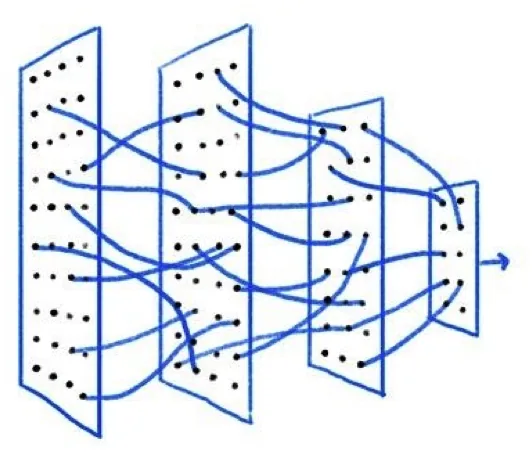
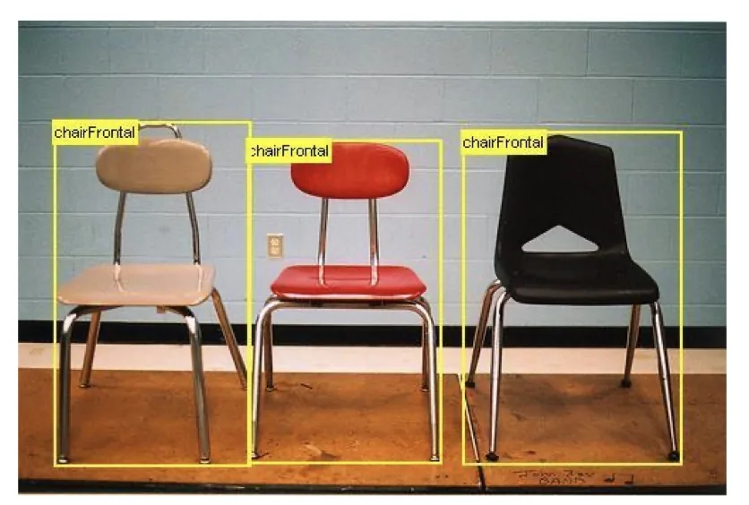
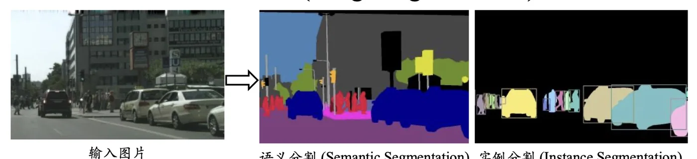
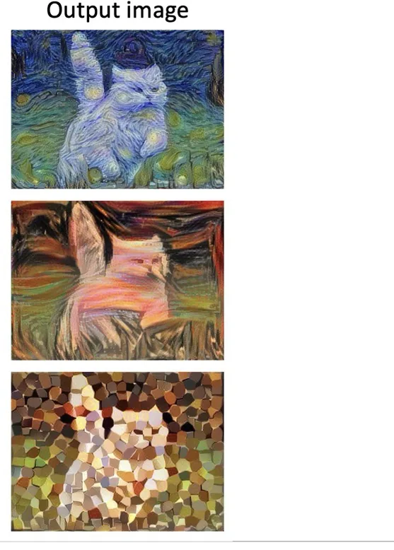
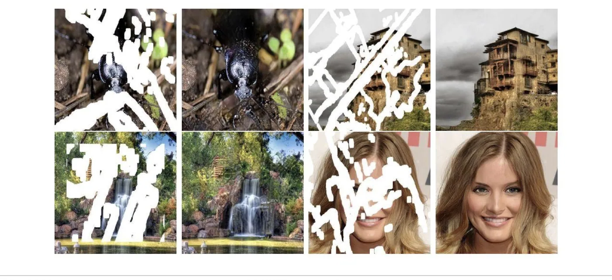
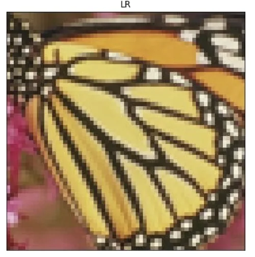
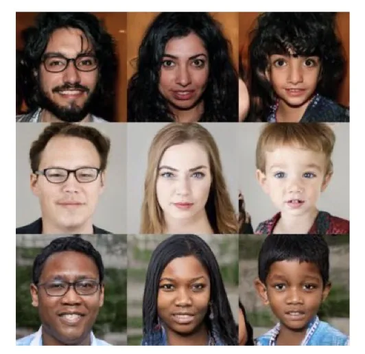
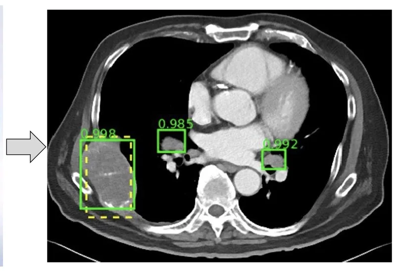
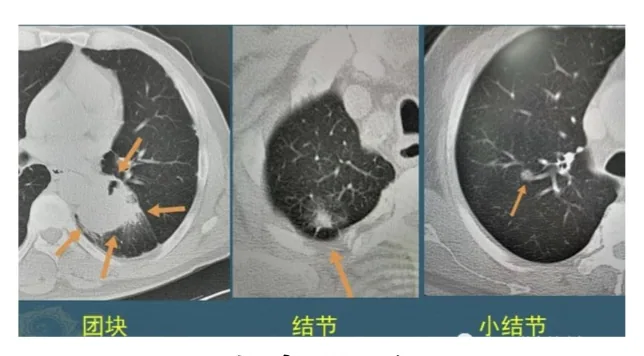
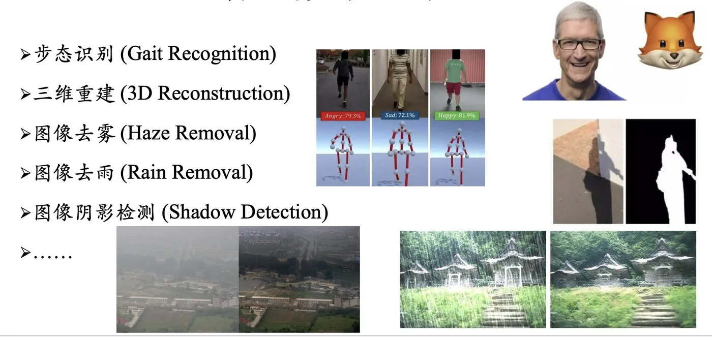

计算机视觉 · 第 1 章 绪论
1.3 常见研究方向
这一节把计算机视觉的主干任务过一遍。理解它们最省力的办法，是看「输入是什么、输出是什么」：图像分类输出一个标签，目标检测输出若干个带类别的框，图像分割输出每一个像素的归属。看清输出形式，就看清了任务本身。这一节还会介绍一批以「图像到图像」为形式的转换类任务，以及医学图像处理这类面向具体行业的方向。
1. 图像分类（Image Classification）
图像分类是整个领域最基础的任务：输入一张图像，输出它属于哪个类别。比如给一张照片，判断里面是猫还是狗。它的输出是整个图像层面的一个标签（或一组类别的概率），不涉及「在哪里」。
说它基础，是因为后面几乎所有任务都把分类器当作积木用：目标检测要在候选框上做分类，图像分割要在每个像素上做分类。本课程第 5、6、7 章讲的前馈神经网络、卷积神经网络和循环神经网络，最先要解决的也正是分类问题。

2. 目标检测（Object Detection）
图像分类只回答「是什么」，目标检测还要回答「在哪里、有几个」：输入一张图像，输出若干个边界框，每个框同时给出位置和类别。图中若有多个物体，就要输出多个框。
这也是它比分类难的地方——模型不仅要判别，还要在空间上定位，并且要处理「同一张图里物体数量不固定」这个麻烦。图 2 中的椅子在同一场景里出现多个实例，正是目标检测要逐个框出来的对象。

3. 图像分割（Image Segmentation）
图像分割把粒度进一步下沉到像素。按输出形式的不同，它又分成三类：
- 语义分割（Semantic Segmentation）：为每个像素给出类别标签（Per-pixel class labels）。同一类别的不同个体不区分，两只猫会被标成同一类；
- 实例分割（Instance Segmentation）：为每个物体给出掩膜和类别标签（Per-object mask & class label）。两只猫要分开标成两个实例；
- 全景分割（Panoptic Segmentation）：同时给出每个像素的类别与实例标签（Per-pixel class+instance labels）——可以理解为语义分割与实例分割的统一。

| 任务 | 输出 | 同类个体是否区分 |
|---|---|---|
| 语义分割 | Per-pixel class labels：每像素一个类别 | 不区分 |
| 实例分割 | Per-object mask & class label：每个物体一个掩膜＋类别 | 区分 |
| 全景分割 | Per-pixel class+instance labels：每像素的类别＋实例 | 区分 |
4. 四类「图像到图像」的转换任务
前面三个任务的输出都是对图像内容的理解（标签、框、掩膜）。下面四个任务的输出则仍然是图像，变化的是图像的风格、缺失部分、分辨率或内容本身。
（1）风格迁移（Style Transfer）
保留一张图的内容，换上另一张图的风格——比如把一张普通照片画成油画笔触。它要解决的是「内容与风格如何分离」，这也是深度学习早期最有传播度的应用之一。

（2）图像修复（Image Inpainting）
把图像中缺失或被遮挡的区域补全，并且要让补出来的部分在语义和纹理上都与周围一致。老照片修复、去除水印或路人，都属于这个任务。

（3）图像超分辨率（Image Super-resolution）
由低分辨率图像重建出高分辨率图像。图 6 中标注的「LR」（Low Resolution）就是作为输入的低分辨率版本——同一个细节在低分辨率下已经丢失，模型要把它「还原」出来。

（4）图像生成（Image Generation / Synthesis）
让模型自己造出图像。这一方向的代表性技术是生成对抗网络（Generative Adversarial Networks，GANs）——用生成器与判别器相互对抗的方式，把「以假乱真」这个目标变成可训练的博弈过程。它是后来各种图像与视频生成技术的起点。

5. 医学图像处理（Medical Image Analysis）
医学图像处理是计算机视觉最成熟、也最有社会价值的落地方向之一。目前，医学图像处理主要集中在四个方向：病变检测、图像分割、图像配准以及图像融合。


四个方向的分工可以这样理解：病变检测回答「有没有异常、在哪里」；图像分割回答「器官或病灶的边界在哪」；图像配准把不同时间或不同设备拍摄的图像对齐到同一坐标（图 8 中的相似度数值 0.985、0.908 就是配准效果的一种度量）；图像融合则把多模态图像合成一张，让医生一次看到更多信息。
6. 其他更多研究方向
除上述方向之外，课件还列举了若干常见的研究课题：
- 步态识别（Gait Recognition）——用行走的姿态识别身份，远距离、非配合条件下也可用；
- 三维重建（3D Reconstruction）——从图像恢复物体的三维几何；
- 图像去雾（Haze Removal）——去除雾霾对成像的影响；
- 图像去雨（Rain Removal）——去除画面中的雨线；
- 图像阴影检测（Shadow Detection）——找出图像中的阴影区域；
- ……

本节小结
- 按输出形式可以把主干任务串起来：分类输出一个标签，检测输出若干个带类别的框，分割输出每个像素的归属。
- 图像分割三类任务的区别在于「同类个体是否区分」：语义分割只给像素类别，实例分割给每个物体的掩膜与类别，全景分割两者兼给。
- 风格迁移、图像修复、图像超分辨率、图像生成这四类任务的输出不是标签而是图像；其中图像生成的代表技术是生成对抗网络（GANs）。
- 医学图像处理集中在病变检测、图像分割、图像配准、图像融合四个方向，分别对应「找异常、定边界、对齐坐标、合并多模态」。
- 此外还有步态识别、三维重建、图像去雾、图像去雨、图像阴影检测等大量细分方向——这也说明计算机视觉的问题域非常宽。